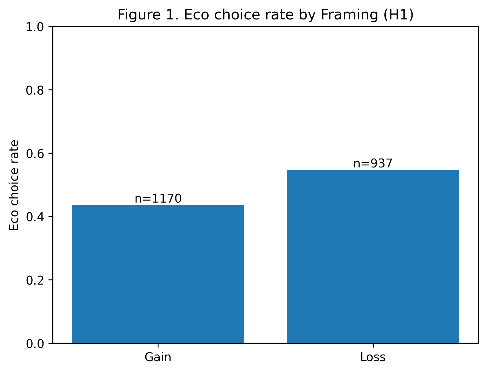

Research design
2 × 2 experiment
Gain vs. loss framing crossed with an instruction-based time-pressure condition. Participants made repeated binary choices between sustainable and conventional products.
Master’s thesis · Marketing Management · 2025–2026
An online randomized experiment testing gain/loss framing and instruction-based time pressure, with repeated consumer decisions and participant-level measures.
Research design
Gain vs. loss framing crossed with an instruction-based time-pressure condition. Participants made repeated binary choices between sustainable and conventional products.
Analysis data
101 participants · 2,424 reshaped trial rows · 2,107 valid choice observations · 2,197 valid reaction-time observations.
Does loss framing increase sustainable product choice? Does its effect change under time pressure or with participants’ prior environmental attitudes? An exploratory extension examines whether repeated-choice consistency marks a boundary condition.
| Stage | Work | Evidence |
|---|---|---|
| Design | Specify a 2 × 2 between-participant experiment with repeated choice trials. | Thesis methodology and survey-flow description. |
| Restructure | Transform the participant-wide export into trial-level records. | Original notebook excerpt and saved decision-level data profile. |
| Prepare | Construct choice and reaction-time variables, mark quality indicators, and attach participant-level attitude measures. | Notebook excerpts and aggregate sample overview. |
| Estimate | Fit logistic choice models and log reaction-time models with participant-clustered uncertainty. | Saved model tables and thesis results. |
| Interpret | Compare direction and uncertainty across the primary and exploratory models. | Five-page case brief and limitations below. |
The estimated loss-framing effect is positive but imprecise: OR 1.56, 95% CI [0.82, 2.97], p = 0.177. This sample does not establish a reliable average framing effect.
In the model with gain framing as the reference condition, higher pre-task environmental attitude is associated with greater odds of sustainable choice (OR 3.51, 95% CI [2.14, 5.78], p < 0.001). This is an adjusted association, not a randomized effect.
The instruction-based manipulation shows no clear reaction-time difference in the saved final model (log-RT coefficient 0.036, 95% CI [−0.175, 0.246], p = 0.738).

Open the short case brief, the public copy of the full thesis, selected original analysis-code excerpts, and aggregate model outputs.